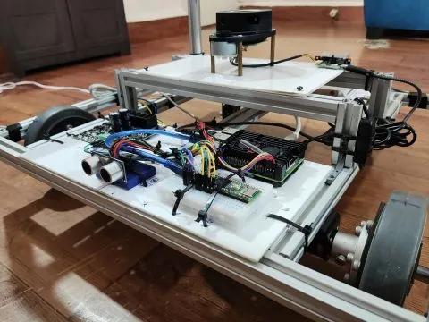

What it does
- Maps and localises, and navigates with replanning and recovery behaviours.
- Docks and undocks using vision (ArUco), IMU, LiDAR and an ultrasonic sensor.
- Takes natural-language voice commands (dock, undock, follow, stop) through a ROS 2 agent node; "stop" safely interrupts any action.
- Carries a torso on dual lead-screw linear rails, ready for arms.
How it is built
- Compute
- Raspberry Pi 4B, with a Teensy 4.1 reading the encoders (33,200 counts per revolution).
- Sensing
- LiDAR, IMU, ultrasonic sensor; a 7-inch touchscreen on the robot for debugging without SSH.
- Power
- A 12 V 30 A supply with a 5 V 20 A buck converter for stable power during development.
- Navigation
- SLAM Toolbox; Nav2 with Smac Hybrid-A* and Regulated Pure Pursuit.
- Tools
- Robot Launcher, a PyQt5 and WebSockets app that starts the real robot or the simulation with one click.


The hard part
Encoders. Odometry was unreliable. I isolated the encoder layer from the rest of the stack and found the ESP32 (240 MHz) couldn't keep up with 33,200-count encoders, so I moved encoder reading to a Teensy 4.1 (600 MHz), which handled them cleanly.
A distorted SLAM map. I asked the community, then fixed flipped encoder readings, halved the encoder count, corrected the LiDAR orientation in the URDF, and posted the fix.
Status and limits
- On the real robot, costmaps didn't clear after obstacles moved. I disabled obstacle detection in the local controller to keep it moving and said so at the time: "Now it moves, but yeah — that's not a proper solution."
- The arms were planned, not built. I didn't get all the way to the service robot I set out to make.
Build log
Designing it in Fusion 360, Mar 2025 Base redesign, Jun 2025 Torso and Nav2, Jul 2025 Voice agent, Jul 2025